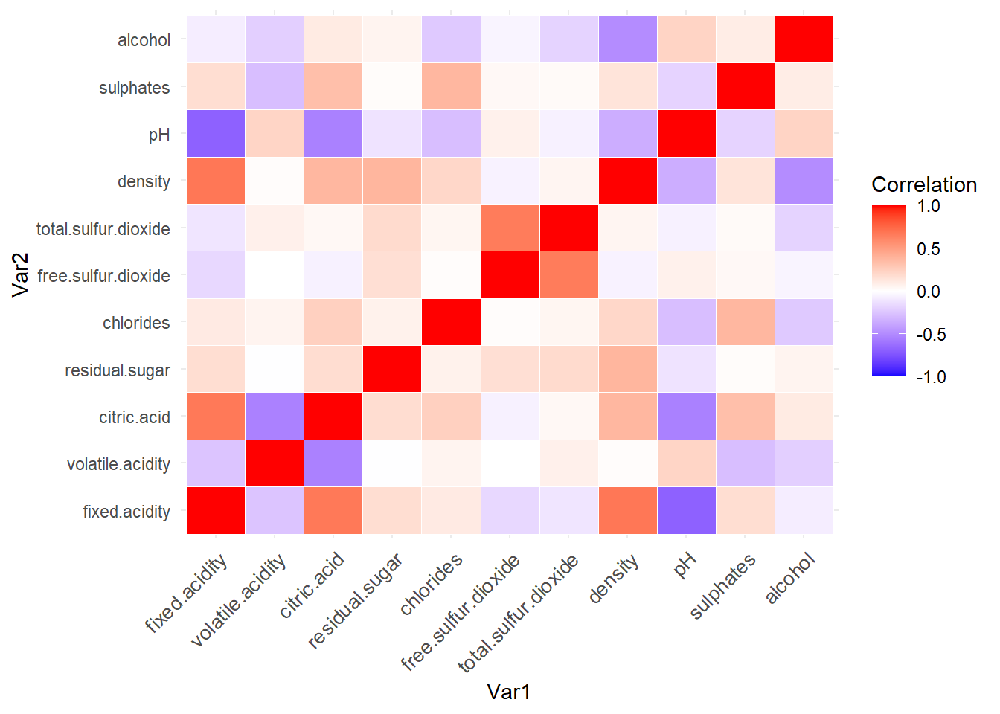
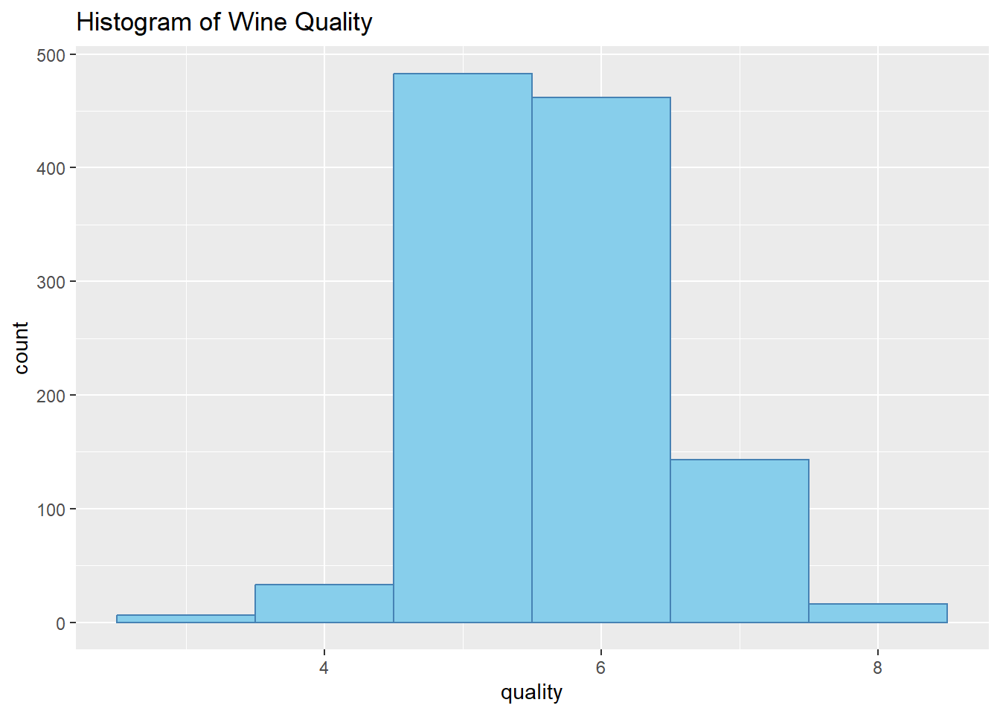
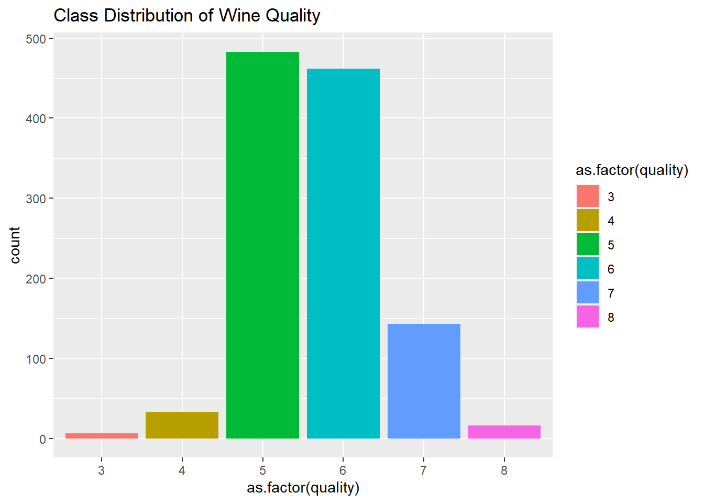
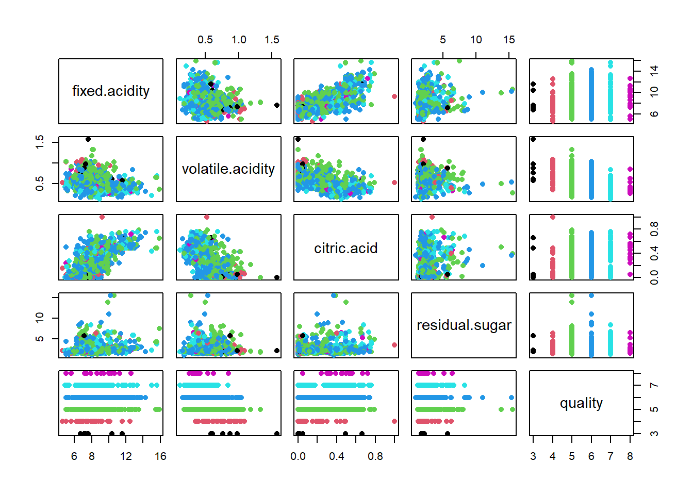
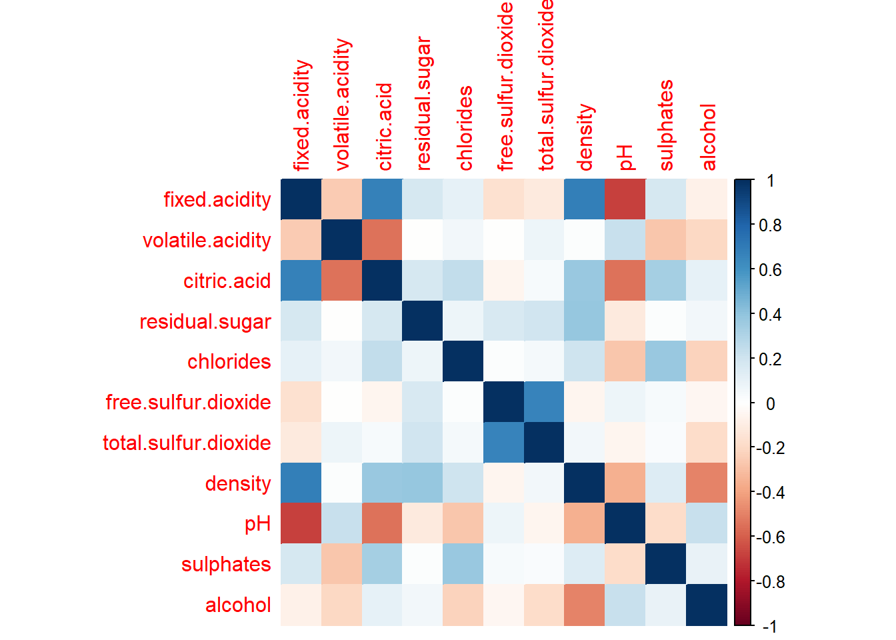

# Load required libraries
library(ggplot2)
# Load the dataset
wine_data <- read.csv("C:/Users/YOJANA/Downloads/AN/KN/WineQT.csv")
# Explore the structure of the dataset
str(wine_data)'data.frame': 1143 obs. of 13 variables:
$ fixed.acidity : num 7.4 7.8 7.8 11.2 7.4 7.4 7.9 7.3 7.8 6.7 ...
$ volatile.acidity : num 0.7 0.88 0.76 0.28 0.7 0.66 0.6 0.65 0.58 0.58 ...
$ citric.acid : num 0 0 0.04 0.56 0 0 0.06 0 0.02 0.08 ...
$ residual.sugar : num 1.9 2.6 2.3 1.9 1.9 1.8 1.6 1.2 2 1.8 ...
$ chlorides : num 0.076 0.098 0.092 0.075 0.076 0.075 0.069 0.065 0.073 0.097 ...
$ free.sulfur.dioxide : num 11 25 15 17 11 13 15 15 9 15 ...
$ total.sulfur.dioxide: num 34 67 54 60 34 40 59 21 18 65 ...
$ density : num 0.998 0.997 0.997 0.998 0.998 ...
$ pH : num 3.51 3.2 3.26 3.16 3.51 3.51 3.3 3.39 3.36 3.28 ...
$ sulphates : num 0.56 0.68 0.65 0.58 0.56 0.56 0.46 0.47 0.57 0.54 ...
$ alcohol : num 9.4 9.8 9.8 9.8 9.4 9.4 9.4 10 9.5 9.2 ...
$ quality : int 5 5 5 6 5 5 5 7 7 5 ...
$ Id : int 0 1 2 3 4 5 6 7 8 10 ...# Display summary statistics
summary(wine_data) fixed.acidity volatile.acidity citric.acid residual.sugar
Min. : 4.600 Min. :0.1200 Min. :0.0000 Min. : 0.900
1st Qu.: 7.100 1st Qu.:0.3925 1st Qu.:0.0900 1st Qu.: 1.900
Median : 7.900 Median :0.5200 Median :0.2500 Median : 2.200
Mean : 8.311 Mean :0.5313 Mean :0.2684 Mean : 2.532
3rd Qu.: 9.100 3rd Qu.:0.6400 3rd Qu.:0.4200 3rd Qu.: 2.600
Max. :15.900 Max. :1.5800 Max. :1.0000 Max. :15.500
chlorides free.sulfur.dioxide total.sulfur.dioxide density
Min. :0.01200 Min. : 1.00 Min. : 6.00 Min. :0.9901
1st Qu.:0.07000 1st Qu.: 7.00 1st Qu.: 21.00 1st Qu.:0.9956
Median :0.07900 Median :13.00 Median : 37.00 Median :0.9967
Mean :0.08693 Mean :15.62 Mean : 45.91 Mean :0.9967
3rd Qu.:0.09000 3rd Qu.:21.00 3rd Qu.: 61.00 3rd Qu.:0.9978
Max. :0.61100 Max. :68.00 Max. :289.00 Max. :1.0037
pH sulphates alcohol quality
Min. :2.740 Min. :0.3300 Min. : 8.40 Min. :3.000
1st Qu.:3.205 1st Qu.:0.5500 1st Qu.: 9.50 1st Qu.:5.000
Median :3.310 Median :0.6200 Median :10.20 Median :6.000
Mean :3.311 Mean :0.6577 Mean :10.44 Mean :5.657
3rd Qu.:3.400 3rd Qu.:0.7300 3rd Qu.:11.10 3rd Qu.:6.000
Max. :4.010 Max. :2.0000 Max. :14.90 Max. :8.000
Id
Min. : 0
1st Qu.: 411
Median : 794
Mean : 805
3rd Qu.:1210
Max. :1597 # Check for missing values
sum(is.na(wine_data))[1] 0# Data visualization for each feature
# You can customize the plots based on your preferences and requirements
# Box plots for each input variable
for (col in 1:11) {
ggplot(wine_data, aes(x = quality, y = wine_data[, col])) +
geom_boxplot(fill = "skyblue", color = "steelblue") +
labs(title = paste("Box plot of", names(wine_data)[col]))
}
# Correlation matrix
cor_matrix <- cor(wine_data[, 1:11])
ggplot(data = as.data.frame(as.table(cor_matrix)), aes(x = Var1, y = Var2, fill = Freq)) +
geom_tile(color = "white") +
scale_fill_gradient2(low = "blue", high = "red", mid = "white", midpoint = 0, limit = c(-1, 1), space = "Lab",
name = "Correlation") +
theme_minimal() +
theme(axis.text.x = element_text(angle = 45, vjust = 1, size = 10, hjust = 1))
# Histogram of the target variable (quality)
ggplot(wine_data, aes(x = quality)) +
geom_histogram(binwidth = 1, fill = "skyblue", color = "steelblue") +
labs(title = "Histogram of Wine Quality")
# Class distribution bar plot
ggplot(wine_data, aes(x = as.factor(quality), fill = as.factor(quality))) +
geom_bar() +
labs(title = "Class Distribution of Wine Quality")
# Pair plots for a subset of variables
# You can customize the subset based on your preferences
subset_vars <- c("fixed acidity", "volatile acidity", "citric acid", "residual sugar", "quality")
# Replace spaces in column names with dots and use backticks
colnames(wine_data) <- gsub(" ", ".", colnames(wine_data))
# Check the column names to ensure they match with the actual names in your dataset
colnames(wine_data) [1] "fixed.acidity" "volatile.acidity" "citric.acid"
[4] "residual.sugar" "chlorides" "free.sulfur.dioxide"
[7] "total.sulfur.dioxide" "density" "pH"
[10] "sulphates" "alcohol" "quality"
[13] "Id" # Subset of variables for pair plots
subset_vars <- c("fixed.acidity", "volatile.acidity", "citric.acid", "residual.sugar", "quality")
# Scatter plot matrix for a subset of variables
pairs(wine_data[, subset_vars], pch = 16, col = as.factor(wine_data$quality))
# Correlation heatmap
library(corrplot)Warning: package 'corrplot' was built under R version 4.3.2corrplot 0.92 loadedcorrplot(cor(wine_data[, 1:11]), method = "color")